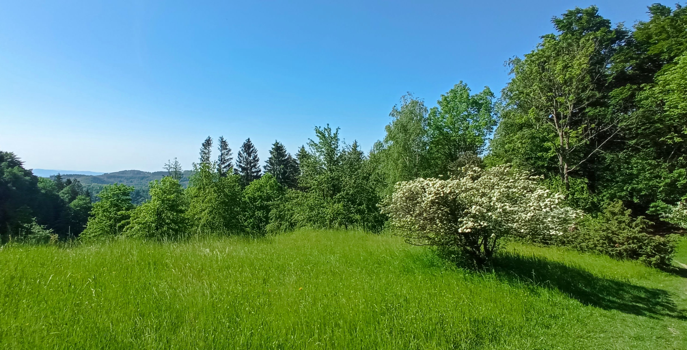

Ultreia: Ketóza na Hostýně

Po delším čase se mi podařilo udělat si sólo výlet do Hostýnských vrchů. Ráno jsem jel autem do Hulína (10 minut) na šestou na vlak, pak vlakem do Bystřice pod Hostýnem (24 minut). Nahoře na Hostýně jsem byl 7:15. :-)
Pak jsem šel přes nejhezčí části (Skalný, Pardus) přes Rusavu do Holešova. Celkem asi 24 km relativně kopcovitým terénem - až na Pardus jsem šel v ketóze, protože jsem od večera nic nejedl. Zkouším teď přerušované půsty - ideálně jsem dnes neměl jíst až do 11:30. Ale to se na pochodu nedalo, takže jsem posnídal proteinovou tyčinku. Obědval jsem až na kopci nad Holešovem proteinové těstoviny s miso omáčkou a sezamem a zajedl to svým kimčchi. Yes more, konečně, udělal jsem si svoje první kimčchi.
Po cestě jsem se kochal přírodou, zpíval jsem si (třeba "Bratře Kubo", "Living in the Past" a "Simkhes-Toyre" - jenom první sloku, víc si nepamatuju, ale hlavně taky mojí oblíbenou mantru "Oṁ asato mā sadgamaya...". Tu nejvíc) - během cesty jsem potkal jen cca tři lidi, takže jsem mohl nerušeně zpívat, aniž bych někoho pohoršoval :-).
No a průběžně jsem zkoušel takový základní theravádový check-in - uvědomování si, co v daném okamžiku prožívám, co vím a jak jednám.

Haluz - na Rusavě jsem potkal asi 100 policistů mohutně vystrojených do různých neprůstřelných vest, zbraní a dalších taktických nástrojů. Měli tu nejspíš nějaké soustředění, protože se právě dávali na pochod někam do kopců. Proplul jsem okolo nich v thajských zavinovacích gatích a tílku - dívali se na mě, jak na zjevení. :-)
Ráno v Bystřici a cestou nahoru docela foukalo - byl jsem rád, že jsem si přibalil větrovku. Pak ale vyšlo víc sluníčko a začalo pražit. Ne tak, jako v létě, ale dost.
Co se ale moc nepovedlo, jsou boty. Vyšel jsem v sandálech Teva. Jsou dobré, ale udělaly mi velký puchýř na levé noze. Byla to asi nejhorší věc z celého výletu, hlavně na závěr to bylo trochu krušné. Ale výsledkem jsou tato poznání:
- Sandály Teva na delší pochody nebrat - asi si místo nich pořídím nějaké víc turistické bosochodky.
- Chce to s sebou vzít náplast.
- Opět se hodně osvědčily hůlky.
- Vzal jsem si jen 0,8 l vody (zapomněl jsem druhou láhev doma na stole) - bylo to málo, ale nebyla to krize. V Holešově jsem si za odměnu koupil plechovku piva a na nádraží jsem ji skoro vdechl.
- Batoh Gemma Marathon je nejvíc - sice ho mám prožraný od myší, ale co už...
Hostýnské vrchy si dejte
Celkově ale Hostýnské vrchy doporučuju k návštěvě. Dá se říct, že už to nejsou nějaké obyčejné kopečky, ale opravdové malé hory. Na to, jak jsou malé, jsou tady slušná převýšení, takže si tady takovým touláním docela máknete. Taky proto si myslím, že jsou tyhle hory dobré hlavně na pěší toulky, na kolo to moc není.
Všude jsou tu barevné čtverečky, takže nehrozí, že byste tady nějak příliš zabloudili. No a celkově tady nebývá tolik lidí. Dá se začít právě v Bystřici pod Hostýnem, kam dobře dojedete vlakem. Pak stačí vylézt nahoru směrem k bazilice - tady je soustředěno hodně turistického a duchovního průmyslu, takže se tu nemusíte moc zdržovat. Každopádně stačí pár kilometrů lesem a loukami a dorazíte na vrchol Skalný, kde kdysi býval hrádek. V lese na vrcholu jsou ale hezké skalní věže a ze sousední louky se dá dobře koukat do kraje. Kousek za Skalným je takové sedýlko - Klapinov, odkud si můžete udělat odbočku na zříceninu Obřany.
Pak můžete pokračovat na Pardus, což je trochu ostřejší výstup, ale odměnou je vám krásné místo s jednou z nejhezčích vyhlídek, kterou jsem v Česku viděl. Koukáte směrem na Hostýnské vrchy a Bílé Karpaty a až na vzdálený horizont jsou jenom zalesněné kopce s loukami a nevidět žádná civilizace. Připomíná to trochu Rumunsko nebo tak něco.
Pak můžete slézt na Rusavu, odkud jede autobus do civilizace, nebo jako já si cestu prodloužit do Holešova. V cestě vám ale stojí ještě jeden hřeben, na který musíte vylézt. A tato etapa není už tak pěkná, jako ta předchozí - jdete hodně po obslužných lesnických cestách. Ale jsou zde taky pěkné úseky. Nakonec dojdete do vesnice Žopy, což je takové předměstí Holešova. Zahlédl jsem tu fungující hospodu, takže se tu asi dá svlažit hrdlo. No a pak už jen po cyklostezce pár kilometrů do města. Holešov také není marnej, i když Bystřice mi přijde lepší. Docela tu funguje kultura, ale škoda té intenzivní dopravy přímo v centru.